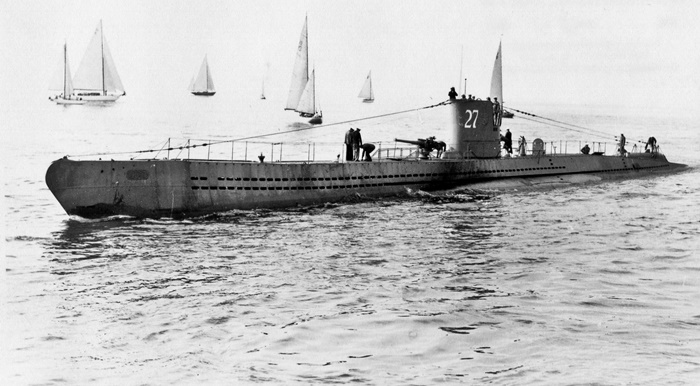

| Spesifikasi | Detail | |
|---|---|---|
| Jenis | Kapal Selam Serbu (Unterseeboot) | |
| Tonase Terbenam | 769 ton | |
| Tonase Timbul | 508 ton | |
| Panjang | 67,1 m (220 ft 2 in) | |
| Lebar | 6,2 m (20 ft 4 in) | |
| Draf | 4,74 m (15 ft 7 in) | |
| Propulsi (Timbul) | 2 x Germaniawerft F46 6-silinder supercharged diesel | |
| Tenaga (Timbul) | 2 x 1.400 hp (1.030 kW) | |
| Propulsi (Terbenam) | 2 x AEG GU 460/8-276 kemudi listrik ganda | |
| Tenaga (Terbenam) | 2 x 375 hp (276 kW) | |
| Kecepatan Maksimum (Timbul) | 17,7 knot (32,8 km/jam; 20,4 mph) | |
| Kecepatan Maksimum (Terbenam) | 7,6 knot (14,1 km/jam; 8,7 mph) | |
| Jarak Jelajah (Timbul) | 8.500 mil laut (15.700 km) pada 10 knot | |
| Jarak Jelajah (Terbenam) | 80 mil laut (150 km) pada 4 knot | |
| Kedalaman Operasi | 100 m (330 ft) | |
| Kedalaman Hancur | 220 m (720 ft) | |
| Awak | Antara 44 dan 52 orang | |
| Persenjataan | 5 x tabung torpedo 53,3 cm (4 di depan, 1 di belakang) Hingga 14 torpedo 1 x meriam 8,8 cm (3,5 in) SK C/35 (kemudian sering dilepas atau diganti) Berbagai meriam anti-pesawat (2 cm Flak atau 3,7 cm Flak, jumlah bervariasi dan terus bertambah selama perang) | |
| Sonar | Berbagai jenis hidrofon (GHG) dan sonar (kemudian dipasang) | |
| Radar | Kemudian beberapa dilengkapi dengan radar FuMO | |
| Jumlah Diproduksi | Sekitar 703 unit (semua sub-tipe VII) |